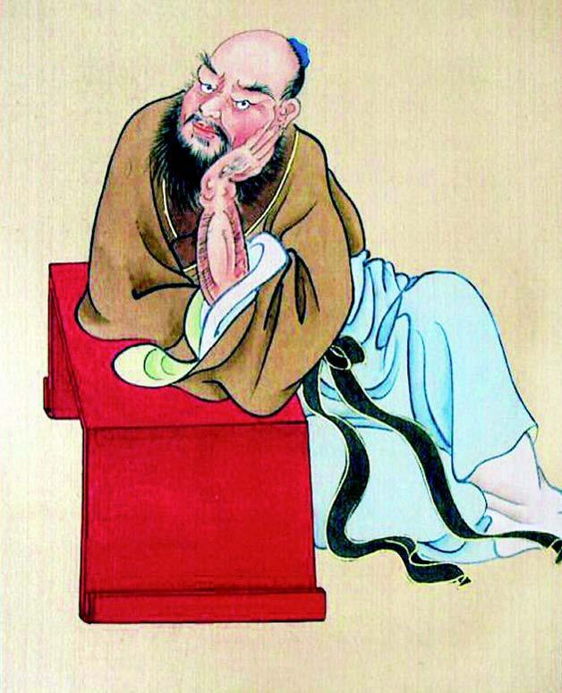
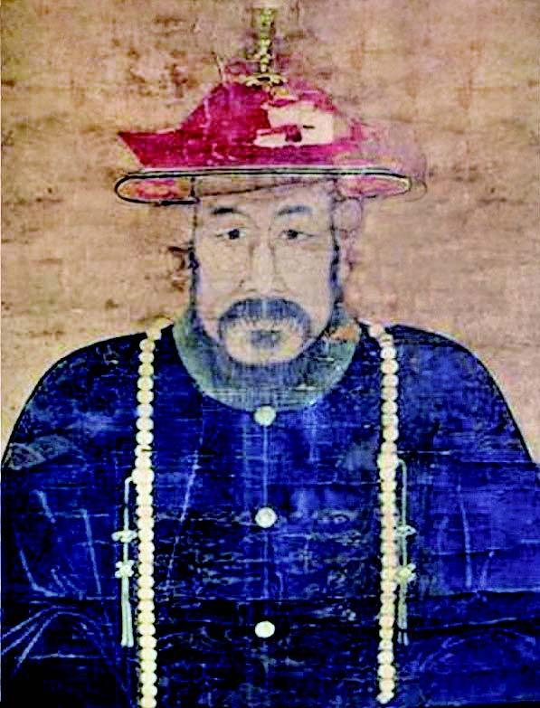

虏寇·坐毙
十余年来，“寇”“虏”并称。前者是深仇大恨，一经提起，咬牙切齿。后者是心腹之患，如虎狼在侧。可甭管“寇”、“虏”，弘光朝竟然都不曾对它们伸出哪怕一根手指头。

周处像。
周处，晋代人，《晋书》、《世说新语》有传。“处少孤，未弱冠，膂力绝人，好驰骋田猎，不修细行，纵情肆欲，州曲患之。处自知为人所恶，乃慨然有改励之志。”为史上改过自新之典型，京剧《除三害》演其事。兴平伯高杰，相当程度上让人联想到周处。

吴三桂像。
吴三桂，崇祯间辽东总兵，封平西伯。闯军破北京后，吴三桂降于满清，在山海关一片石会同清军击败李自成。清军由此入关、占领北京。当时南京不以为其叛降，目之“仗义媾虏”。